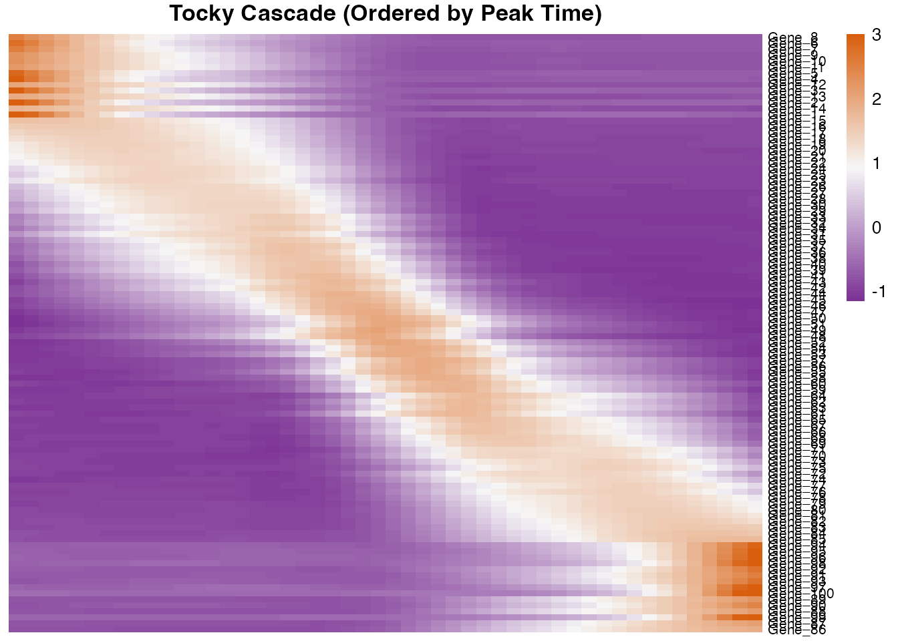

Advanced Dynamics and Temporal Cascades
Masahiro Ono
2026-03-13
Source:vignettes/Advanced_Dynamics.Rmd
Advanced_Dynamics.RmdIntroduction
Once the Canonical Tocky Manifold is constructed and cells are assigned a precise continuous coordinate (Tocky Time), the next crucial step is determining which genes significantly alter their expression along this developmental trajectory.
This vignette demonstrates how to use RunTradeSeqTocky
to fit Generalized Additive Models (GAMs) and
PlotTockyHeatmap to identify transcriptional cascades.
1. Establishing the Base Manifold
To demonstrate the power of CanonicalTockySeq and
tradeSeq, we will simulate a dataset with a true underlying
biological structure: * 100 genes are simulated to peak sequentially
along the developmental trajectory. * We simulate a biological knockout
(KO) where cells have a 50% reduction in expressing the ‘Late’ stage
genes compared to Wild-Type (WT).
set.seed(2026)
n_genes <- 500
n_cells <- 300
# 1. Assign true developmental time and groups to cells
true_time <- runif(n_cells, 0, pi/2)
cell_groups <- sample(c("WT", "KO"), n_cells, replace = TRUE)
names(cell_groups) <- paste0("Cell_", 1:n_cells)
# 2. Engineer Continuous Temporal Cascades for Top 100 Genes
# We use a Gaussian function so each gene peaks sequentially along the trajectory
gene_peaks <- seq(0, pi/2, length.out = 100)
X_signal <- matrix(0, nrow = 100, ncol = n_cells)
for(i in 1:100) {
X_signal[i, ] <- exp( - (true_time - gene_peaks[i])^2 / 0.1) * 20
}
# Add 400 random noise genes
X_noise <- matrix(runif(400 * n_cells, 0, 2), nrow = 400, ncol = n_cells)
X_base <- rbind(X_signal, X_noise)
# Simulate a biological knockout effect: KO cells fail to fully upregulate 'Late' genes
ko_idx <- which(cell_groups == "KO")
X_base[70:100, ko_idx] <- X_base[70:100, ko_idx] * 0.5
# Format as non-negative counts for tradeSeq
X <- round(X_base + matrix(rnorm(n_genes * n_cells, sd = 1), nrow = n_genes))
X[X < 0] <- 0
colnames(X) <- names(cell_groups)
rownames(X) <- paste0("Gene_", 1:n_genes)
# 3. Create Gene Constraints (Z) matching the biological landmarks
# Blue (New) peaks at t=0, BlueRed (Persistent) at t=pi/4, Red (Arrested) at t=pi/2
all_gene_peaks <- c(gene_peaks, runif(400, 0, pi/2))
Z <- matrix(0, nrow = n_genes, ncol = 3)
colnames(Z) <- c("Blue", "BlueRed", "Red")
rownames(Z) <- rownames(X)
Z[, "Blue"] <- exp( - (all_gene_peaks - 0)^2 / 0.2 )
Z[, "BlueRed"] <- exp( - (all_gene_peaks - pi/4)^2 / 0.2 )
Z[, "Red"] <- exp( - (all_gene_peaks - pi/2)^2 / 0.2 )
# 4. Reconstruct Manifold
tocky_res <- CanonicalTockySeq(X = X, Z = Z)## Normalization and projection completed...
## Performing fast partial SVD (irlba) for top 3 components...
## SVD completed...
gradient_res <- GradientTockySeq(
res = tocky_res,
B = tocky_res$biplot["Blue",],
BR = tocky_res$biplot["BlueRed",],
R = tocky_res$biplot["Red",]
)2. Rapid Pre-filtering of Dynamic Genes
Fitting GAMs to tens of thousands of genes is computationally
intensive. The SelectTockyGenes function provides a rapid
linear spline regression filter to isolate the most dynamically varying
genes along the Tocky Time axis.
# Select the top 100 most dynamic genes for a highly impressive cascade
dynamic_genes <- SelectTockyGenes(
expression_data = X,
gradient_res = gradient_res,
top_n = 100,
min_expr = 0.05
)## Initial screen: 500 genes passed expression threshold (5.0%).
## Scoring dynamics for 500 genes...
## Selected top 100 genes.3. Differential Dynamics using tradeSeq
The RunTradeSeqTocky wrapper interfaces directly with
the tradeSeq package to fit GAMs. It evaluates expression
against the 0-90 degree Tocky Time.
By providing a named vector with two conditions (WT and KO),
tradeSeq will test for genes that have significantly
different dynamic trajectories between the two groups.
# Fit GAMs and perform statistical testing between WT and KO
tradeSeq_res <- RunTradeSeqTocky(
object = X,
gradient_res = gradient_res,
group_by = cell_groups,
genes = dynamic_genes,
n_knots = 5,
n_cores = 1
)## Running tradeSeq on 100 genes across 300 cells (2 groups)...## Testing for differential dynamics (Condition Test)...
# View the differential dynamics results (p-values and FDR)
head(tradeSeq_res$results)## waldStat df pvalue padj
## Gene_71 97.80592 5 0.000000e+00 0.000000e+00
## Gene_73 91.25394 5 0.000000e+00 0.000000e+00
## Gene_72 99.79666 5 0.000000e+00 0.000000e+00
## Gene_70 120.21078 5 0.000000e+00 0.000000e+00
## Gene_74 83.73076 5 1.110223e-16 2.220446e-15
## Gene_76 79.41389 5 1.110223e-15 1.850372e-144. Visualizing the Temporal Cascade
Once significant genes are identified, plotting them in developmental order reveals the sequential transcriptional logic of your system.
The PlotTockyHeatmap function supports ordering genes by
their peak activation timing (“peak”) or via standard hierarchical
clustering (“cluster”). By default, it applies a Z-score row scaling to
highlight expression shifts.
# Plot the expression cascade, ordered by the peak Tocky Time
PlotTockyHeatmap(
object = X,
gradient_res = gradient_res,
genes = dynamic_genes,
ordering_method = "peak",
n_bins = 50,
span = 0.5
)## Binning 300 cells into 50 angular intervals...
## Smoothing binned trajectories...
5. Biological Interpretation
The heatmap above visualizes the transcriptional cascade along the Canonical Tocky Manifold. This allows identification of specific temporal windows, identifying the immediate-early genes that initiate upon TCR signalling versus the late-stage markers associated with antigen-experienced states.
- The X-axis (Tocky Time): Represents the progression of cells from the ‘New’ state to the ‘Arrested’ state, decoupled from the absolute signaling intensity.
- The Y-axis (Genes): Displays the top 100 most dynamic genes, ordered sequentially by their peak expression timing.